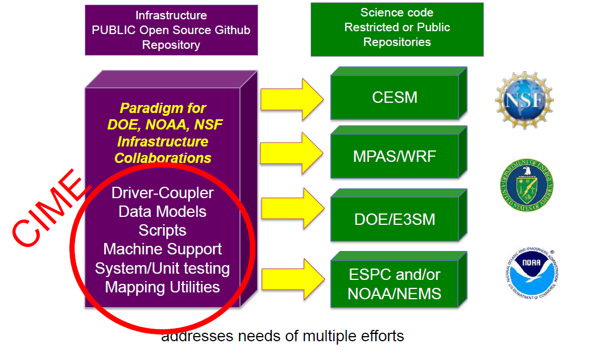
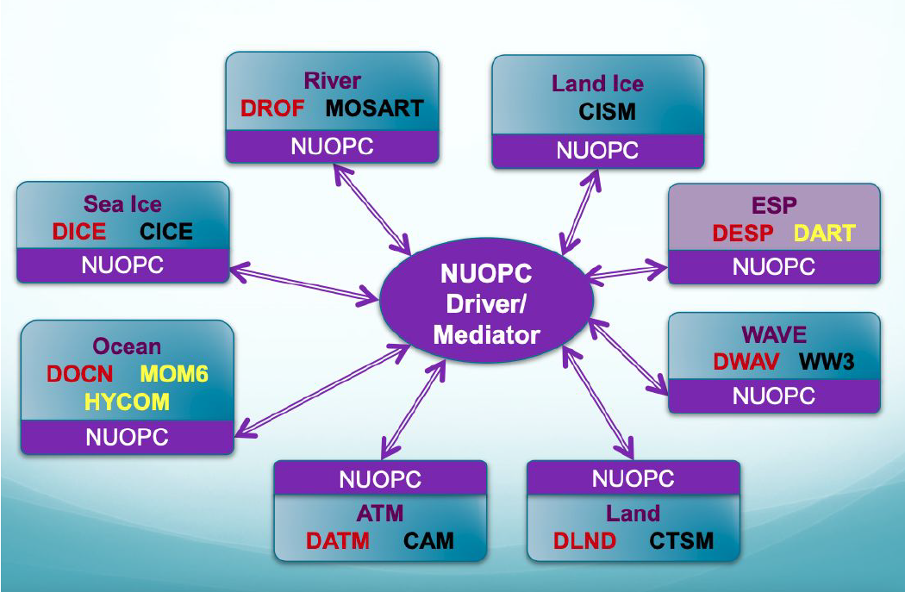

1. Overview of CESM Basics
Contents
1. Overview of CESM Basics#
Welcome to the world of the Community Earth System Model (CESM). CESM is a coupled climate model for simulating Earth’s climate system. The model is composed of separate models that simultaneously simulate the Earth’s atmosphere, ocean, land, river run-off, land-ice, and sea-ice. In this section you will be introduced to the Basics behind CESM workspaces, component models, coupling, code, running, and archiving the results of CESM model simulations. Specifically we will cover the steps of:
Outline:
The CESM
Project WebpageThe CESM2
Model WebpageCESM2
Component ModelsandCouplingThe CESM2
Quickstart GuideDownloadingCESM2CIMEand theCase Control SystemCreating & RunningaCaseGetting More
Help
2. CESM Project Web Page#
The CESM Web Page is the first point of reference for all things CESM. Here we can explore the larger CESM project, delve deeper into individual working groups, models, research activities, model releases, supporting model data, tools, events and much much more.
Click here to start your CESM exploration
http://www.cesm.ucar.edu
Take-away points:
CESM
ProjectInformationWorking GroupsInformationCommunity ProjectsInformationCESM2 Large Ensemble
CESM2 Stratospheric Aerosol Injection (ARISE-SAI)
What
Versionof the model should you use?Individual ModelPages https://www.cesm.ucar.edu/models/Supported ModelReleases – 2.1.X vs 2.2.XExperiments, expand a case for details, diagnostics plots for many experiments
3. CESM2 Web Page#
For information specific to the CESM version 2 Model there is a dedicated CESM2 Web Page. This page can be found under models on the CESM Project Web Page.
The CESM Web Page details release information, downloading instructions, scientifically validated configuration, documentation and more.
Click here to start your CESM2 exploration:
http://www.cesm.ucar.edu/models/cesm2
Take-away points:
Release SeriesInformation Notes andSupported TagsDownloadingInstructions - No User Registration RequiredCESM2.2
Scientifically ValidatedComponent Set ConfigurationsOnline Documentation– Quickstart, CIME, drop-down version choicePrognostic ComponentDetails and DocumentationNamelistandCaserootDefinitions - https://www.cesm.ucar.edu/models/cesm2/settings/current/
4. CESM2 Components#
The CESM2 Model is comprised of 7 Prognostic or otherwise known as Active Components that are coupled through the Common Infrastructure for Modeling the Earth known as CIME. Each model component is detailed on the CESM2 Web Page. The models each have a page containing descriptions and documentation for active or prognostic models. You can explore each of the component models and CIME from the links below.
Component Links:
5. CESM2 Common Infrastructure for Modeling the Earth (CIME)#
The Common Infrastructure for Modeling the Earth is a python-based framework that is shared between CESM2 and other modeling center efforts to ensure efficient
coordination of model development. The schema below shows some of the science benefits and organizations that are using the CIME infrastructure.

Figure: Overview of the CESM2 Common Infrastructure for Modeling the Earth (CIME)
6. CESM2 Coupling#
The CESM2 coupling is performed through the Model Coupling Toolkit (MCT). Additionally, the MCT coupling framework allows data and stub components to
replace active or prognostic components providing flexible activation/deactivation of feedbacks.
The schematic below shows all of the components and their connections.
Figure: Overview of the CESM2 Components and Model Coupling Toolkit (MCT) 
7. New Earth System Modeling Framework (ESMF) Coupling for beyond CESM2#
Development beyond the CESM2 MCT coupling framework is changing to the Earth System Modeling Framework (ESMF)
National Unified Operational Prediction Capability (NUOPC) framework. More details on NUOPC can be found at
https://earthsystemmodeling.org/nuopc/ . The schema below shows the new CESM
configuration and coupling with NUOPC. This is included for information only as the CESM2 used in this tutorial does not use this new framework.

Figure: Overview of the new CESM Components and National Unified Operational Prediction Capability (NUOPC) framework
8. CESM2 Quickstart Workflow#
The CESM2 Workflow is documented in the CESM2 Introduction https://escomp.github.io/CESM/release-cesm2/ and CIME https://esmci.github.io/cime/versions/master/html/index.html documentation pages. These pages are a guide for both novice and experienced users on the work flow steps for downloading, building and running CESM2. These steps will form the basis of the remaining elements of this practical session. Specifically we will be covering the Workflow below over the remaining workbooks.
Workflow Elements:
One-Time Setup Steps
Downloadthe CESM codeCreateanInput DataRoot DirectoryPorting
Creating and Running a Case
Createa New CaseInvokecase.setupBuildthe Executable with case.buildRunthe Model with case.submitReviewOutput Data